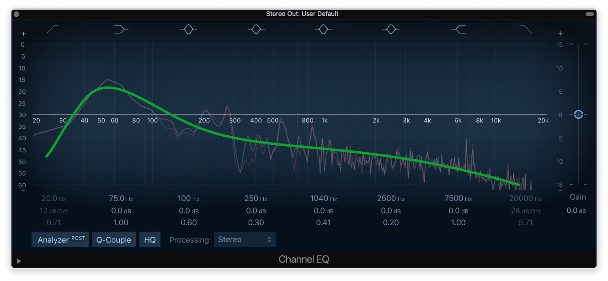
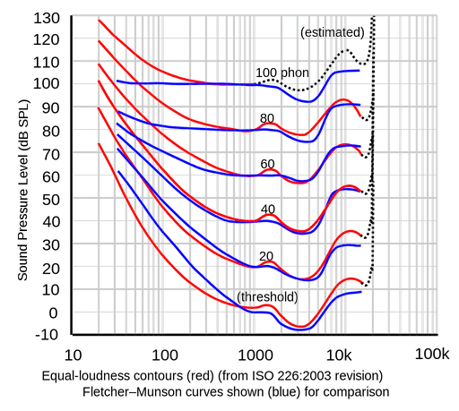
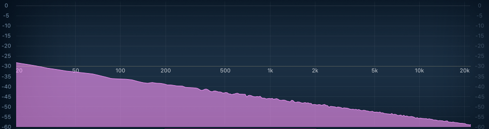

1. Mix Balance
Balanced mixes resemble equal loudness curves
Equal loudness refers to equal perceived or measured loudness across the frequency spectrum.Shaping your mix to target equal loudness, by matching a balanced reference mix or an equal loudness profile, will result in a balanced mix.
In Practical Terms
Pick a balanced reference track from your given genre or an equal loudness profile as a reference, and mix while targetting the reference's EQ shape.
More Info
Two notable profiles for equal loudness are equal loudness curves and pink noise.Equal loudness curves are measured population averages for perceived equal loudness across the frequency spectrum, at different listening levels. Note the elevated bass at normal listening levels. Professional mixes can resemble the average of such curves.

Pink noise is a noise profile with equal energy per octave. Note the downward straight line. Balanced audio can resemble this profile.

Note various forms of problems with mixes like harshness, sibilance are descriptions of unbalanced audio (undesirable levels / humps / spikes) at different parts of the frequency spectrum.